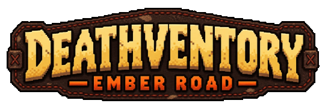

Player support
Need help with a run? You can email us, check the controls for Mac or iPad, or find out how to save your progress and change your settings.
Email alex@growlite.ai if you need help, spot a bug, or have a privacy question. For a bug, tell us which version of the game you’re playing, your device and operating system, and what you did just before the problem appeared. A screenshot can help. Please leave out unrelated personal details.
Our privacy policy explains what happens to your support emails and TestFlight feedback.
GrowLite AI LLC and Rius (Alvaro Gil) made Deathventory. GrowLite AI LLC publishes it.
Alex used Suno Pro to create the soundtrack for version 1.0 (7). The paid plan lets us use those tracks commercially in Deathventory.
Apple’s Standard End User License Agreement applies to the App Store version. Some components and assets have their own licenses. The permissions in those licenses still apply. You’ll find the notices in the game’s credits.
Start a run
Choose START THE ROAD on the title screen. On a new profile, you’ll learn the basics of combat before you pick a campaign. If you’ve saved a run for later, choose CONTINUE to pick up where you left off.
See where the hit will land
Each turn shows what kind of attack is coming, which edge of the pack it will hit, and the row or column in its path. Before you commit, check the forecast on the combat panel. It shows exactly what will happen to your health and your items.
Arrange your pack
Move items around your 6×5 pack. Put armor in the path of the hit and use TURN to aim the tip of a weapon. Check that the weapon is ready to strike. Keep fragile supplies in SAFE POCKETS.
Play your turn
There’s no turn timer. You can move things around, choose USE for a ready consumable, sidestep the attack, or throw an item. When the forecast looks right, press COMMIT.
Drag items with the mouse, or use the arrow keys to move between cells. To change any of these shortcuts, open OPTIONS → CONTROLS. Choose RESET KEYS to get the defaults back.
- Tap an item to select it. Drag it to move it between backpack cells and loot slots.
- In combat or while sorting loot, tap TURN to rotate the item you’ve selected or are holding. Elsewhere, keep one finger on the item as you drag it and tap TURN with another finger. You can also choose MORE → ROTATE.
- Open MORE for INSPECT, POCKET, and other actions available for that item.
- In a fight, tap USE for a ready item. Throw and Sidestep are on the action strip. To advance, tap whichever button appears for that step (START FIGHT, COMMIT, or CONFIRM).
- To save a run, choose Save & Quit from the pause menu. Choose CONTINUE on the title screen to resume. Deathventory is an offline game for one player and needs no account. Mac and iPad each keep their own saves, so a run saved on one device won’t appear on the other.
- Choose English or Spanish on the title screen, or switch languages in OPTIONS → DISPLAY → LANGUAGE / IDIOMA.
- In OPTIONS → ACCESS, you can turn on Sound Captions or choose a color palette (NORMAL, RED-GREEN SAFE, or BLUE-YELLOW SAFE). You can also tell tiers apart by their names, shapes, and badges.
- On Mac, open OPTIONS → DISPLAY to switch between FULLSCREEN and WINDOWED. Choose FILL SCREEN to fill the available space or PIXEL PERFECT to keep pixel edges sharp at whole-number scales.
Si necesitas ayuda, encuentras un fallo o tienes una consulta de privacidad, escribe a alex@growlite.ai. Si se trata de un fallo, dinos qué versión del juego usas, qué dispositivo y sistema operativo tienes y qué hiciste justo antes de que apareciera el problema. Puedes adjuntar una captura. Evita incluir datos personales que no hagan falta. Nuestra política de privacidad explica cómo tratamos tus mensajes y tus comentarios de TestFlight.
Licencia del juego
GrowLite AI LLC y Rius (Alvaro Gil) crearon Deathventory. GrowLite AI LLC publica el juego.
Alex creó la banda sonora de la versión 1.0 (7) con Suno Pro. El plan de pago nos permite usar esa música con fines comerciales en Deathventory.
El contrato estándar de licencia de usuario final de Apple se aplica a la versión del App Store. Algunos componentes y recursos tienen licencias propias. Los permisos que conceden esas licencias siguen vigentes. Puedes consultar los avisos en los créditos del juego.
- Para empezar, elige EMPEZAR EL CAMINO en la pantalla de título. Si tu perfil es nuevo, aprenderás lo básico del combate antes de elegir una campaña. Si ya tienes una partida guardada a medias, elige CONTINUAR.
- Antes de mover nada, mira por dónde entrará el ataque y qué fila o columna alcanzará. Coloca la armadura en su trayectoria, gira las armas para orientar la punta y comprueba si están listas para atacar. La previsión indica qué pasará con tu salud y tus objetos. Cuando estés conforme, pulsa CONFIRMAR.
- En un Mac con Apple silicon (arm64), arrastra los objetos con el ratón o usa las flechas para moverte entre casillas. Pulsa SPACE para confirmar, R para girar un objeto, T para examinarlo, A para usarlo o ESC para pausar. Puedes cambiar las teclas en OPCIONES → CONTROLES.
- En iPad puedes jugar con el dispositivo en horizontal, girado hacia cualquiera de los dos lados. Toca un objeto para seleccionarlo o arrástralo para moverlo. En combate o al recoger botín, toca GIRAR para cambiar su orientación. Para ver sus detalles, abre MÁS y toca EXAMINAR.
- Para dejar una partida a medias, abre el menú de pausa y elige Guardar y salir. El progreso se guarda en el dispositivo sin necesidad de una cuenta. Las partidas de Mac y de iPad no se sincronizan.
- Puedes cambiar entre inglés y español en la pantalla de título o en OPCIONES → PANTALLA → IDIOMA / LANGUAGE. En OPCIONES → ACCESO puedes elegir una paleta para el daltonismo o activar los subtítulos de sonido.